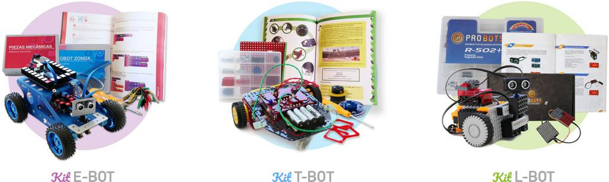

start()
El propósito de este blog es publicar artículos sobre electrónica, robótica educativa y otros temas.
Personalmente yo soy desarrollador de software, pero me interesan varios temas como la electrónica y la impresión 3D.
En Argentina, en la provincia de Buenos Aires, entre los años 2018 y 2020 existió un proyecto estatal cuyo propósito era usar la robótica como herramienta educativa en escuelas primarias. En este contexto el ministerio de educación distribuyó kits de robótica de distintas marcas en escuelas primarias estatales y privadas.
Estos kits que fueron diseñados o configurados de acuerdo a los requerimientos del proyecto se denominaron T-Bot (fabricado por Robotgroup), E-Bot (fabricado por Educabot) y L-Bot (fabricado por Mis Ladrillos).

En esta oportunidad con el fin de darles propósito nuevamente a esos kits y evitar que se conviertan en E-Waste quiero compartir algunos documentos que solían estar publicados en https://www.edurobotica.edu.ar (página que lleva inactiva al menos 2 años). Estos primeros documentos son datasheets con algunas características técnicas de los kits.
- Datasheet de la placa principal del kit L-Bot
- Datasheet de la placa principal del kit E-Bot
- Datasheet de la placa principal del kit T-Bot
Todos estos documentos fueron publicados originalmente con licencia CC-BY-SA por el Ministerio de Educación de la Provincia de Buenos Aires, por lo que pueden ser copiados y usados libremente.
Comentarios